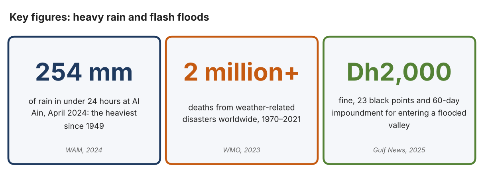
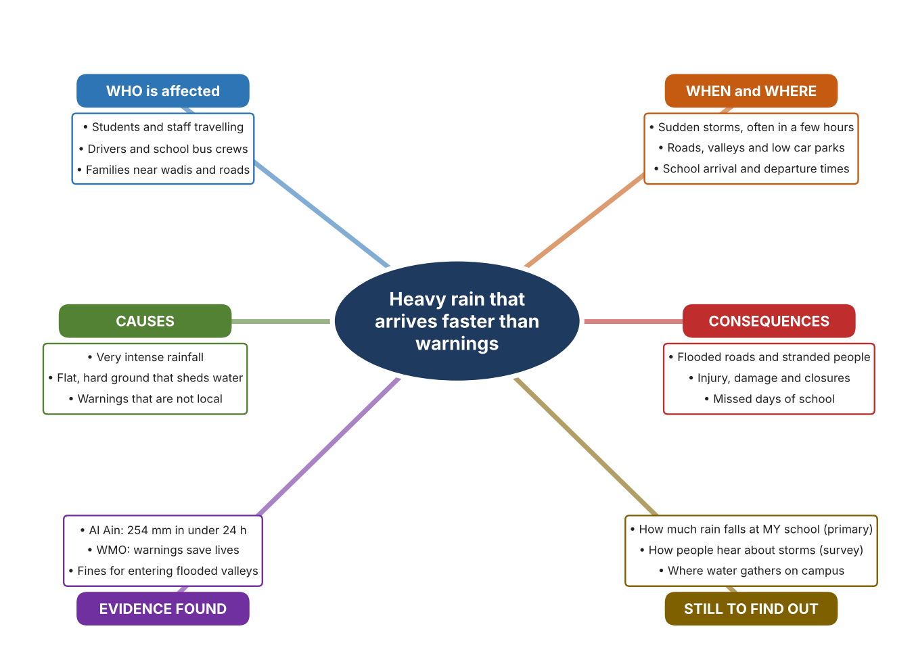
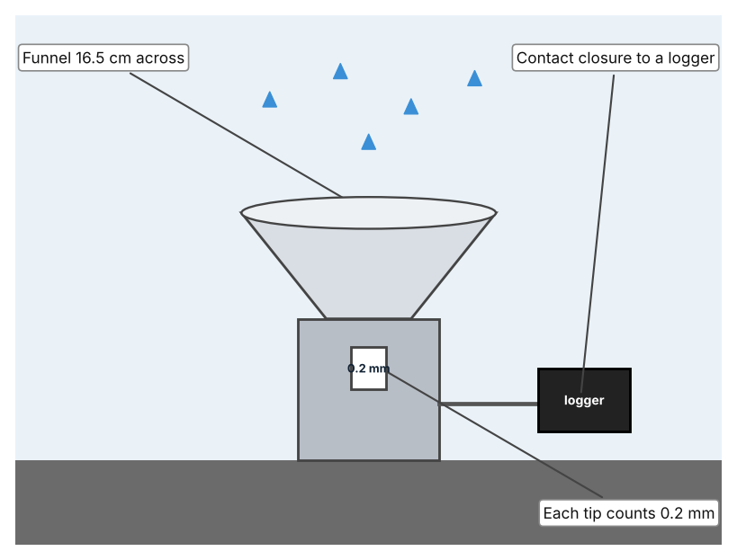
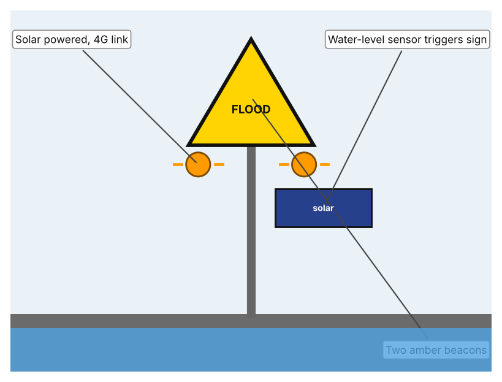
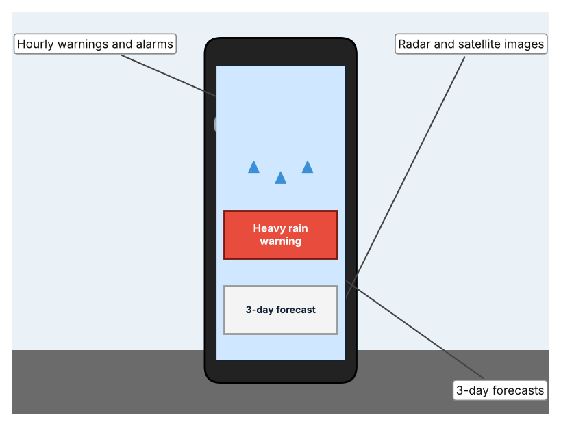

A1 · Design need
Identify and explain the problem faced by your client and community.
My client is the Transport and Safety Office of a Dubai school, represented by the Safety Officer. The office plans student arrival, departure and school buses, and it has seen that when rain is heavy the school grounds and nearby roads can flood within a short time. The office needs people to be told about dangerous rainfall early enough to change what they do, and it wants the decisions to be based on measured local rainfall.
The people most affected are students and staff who travel to and from school, because roads and car parks can become unsafe quickly. Drivers and bus crews are a second group, because they decide whether to continue a journey. Families who live near valleys or low roads are a third group, because the water can reach them before they receive any warning.
The need is real because rainfall in the UAE can be extreme. In April 2024, Khatm Al Shakla in Al Ain received 254 mm in under 24 hours, the largest amount of rain in 75 years (WAM). The World Meteorological Organization reports that weather-related disasters between 1970 and 2021 caused just over 2 million deaths, and that early warnings reduce deaths (World Meteorological Organization). In October 2025 the National Centre of Meteorology warned of flash floods and landslides, and drivers who enter flooded valleys face a Dh2,000 fine, 23 black points and 60 days of vehicle impoundment (Pavithran).
Figure 1 summarises the key numbers. The WMO figure is global and the Al Ain figure was measured in one place, so I treat them as a pattern and not as the rainfall at my school. In my own words: a storm is dangerous when it arrives faster than the warning. Figure 2 is my mind map of the problem.
296 words


A2 · Research plan
Six research questions of different types, each with a priority, a research type and evidence.
| # | Question | Priority | Primary / secondary | Evidence | Brief answer |
|---|---|---|---|---|---|
| 1 | Factual: How much rain fell during the heaviest recent UAE storm, and where? | High | Secondary | WAM, Gulf News, 18 Apr. 2024 (Appendix A, Source 2) | 254 mm in under 24 hours at Khatm Al Shakla, Al Ain, the heaviest rainfall in 75 years. |
| 2 | Factual: How many people die in weather-related disasters, and what role do early warnings play? | High | Secondary | WMO, 2023 (Appendix A, Source 1) | Just over 2 million deaths from 11,778 disasters between 1970 and 2021; early warnings are credited with reducing deaths, yet only about half of countries have such systems. |
| 3 | Conceptual: How is rainfall measured, and how can a measurement become a warning? | Medium | Secondary | Davis page (Source 4); TST page (Source 5) | A tipping-bucket gauge counts 0.2 mm tips and a contact closure reports each tip; a water-level sensor can switch on roadside warning beacons. |
| 4 | Debatable: Should people be warned by phone alerts, by signs at the place of danger, or by a measurement at the school itself? | Medium | Secondary | Appendix A, Sources 4, 5 and 6 | Alerts reach people anywhere but are national and general; roadside signs warn exactly where it is dangerous but only at fixed sites; a local gauge gives local data but needs someone to read it. My view: local measurement matters most. |
| 5 | Debatable (challenges my assumption, UAE source): Rain is rare in the UAE, so is flood risk really a problem for a school? | High | Secondary | WAM, Gulf News, 2024 (Source 2); Gulf News, 19 Oct. 2025 (Source 3) | The 2024 storm gave about two years of rain in under 24 hours and 2025 brought flash-flood warnings and fines. Rain is rare, but when it comes it is extreme, so rarity makes preparation harder. |
| 6 | Factual (primary): How much rain falls at our school during a rainy day, and how do students and staff hear about storms? | High | Primary | Own rainfall log and survey (Appendix A, Sources 7 and 8) | [Student data needed: write the rainfall readings (with date and time) and survey averages, then two sentences on the pattern you see.] |
A3 · Existing products
Three significantly different products, each analysed with ACCESS FM, with pros and cons.
Product 1: Tipping-bucket rain collector (Davis 7852)

Illustration by the author based on “Rain Collector 7852 Specifications,” Davis Instruments (Appendix A, Source 4). [Student: replace with a photo from the source, cited MLA 9]
Product 2: Roadside flood warning (TST iFLOOD)

Illustration by the author based on “TST iFLOOD Monitoring System,” Aldridge Traffic Systems (Appendix A, Source 5). [Student: replace with a photo from the source, cited MLA 9]
Product 3: National weather app (UAE Weather, NCM)

Illustration by the author based on Bitar, Gulf News (Appendix A, Source 6). [Student: replace with a photo from the source, cited MLA 9]
ACCESS FM analysis
| ACCESS FM | Product 1 | Product 2 | Product 3 |
|---|---|---|---|
| Aesthetics | Small grey-white collector with a funnel; looks are not described in the specification (Davis). | Roadside signs with amber LED beacons; appearance beyond that is not described (TST). | App screens with maps and images; design is not described (Gulf News). |
| Cost | Price not stated in the specification (Davis). | Price not stated in the data sheet (TST). | Free or paid is not stated in the 2018 article. |
| Customer | Anyone who needs a rainfall record, such as a school or farm (my inference). | Road authorities that need to warn drivers at a flood point. | The public across the UAE; over 25,000 users when launched in 2018. |
| Environment | Made of UV-stabilised ABS and stainless steel; powered through the logger it connects to. | Solar powered: 40 W panel and 26 Ah battery at the sensor, 50 Ah at the sign; IP68. | Uses phone power; not described further. |
| Size | Collector 16.5 cm diameter and 24 cm high. | Size is not stated in the data sheet. | Software only; no size. |
| Safety | Gives data only; it does not warn anyone on its own. | Amber beacons warn drivers at the point of danger. | Alarms for sandstorms, rain, tornadoes and fog. |
| Function | Measures 0.2 mm per tip with an accuracy of ±4% up to 50 mm/h and ±5% from 50 to 100 mm/h. | A level sensor triggers signs through a 4G link; depth thresholds are not stated. | Hourly warnings, three-day forecasts, radar and satellite pictures. |
| Materials | UV-stabilised ABS with stainless adjustment screws. | Stainless steel enclosures. | Not applicable (software). |
Pros and cons
| Product 1 | Product 2 | Product 3 | |
|---|---|---|---|
| Pro | Measures rainfall accurately and cheaply enough to place at a school. | Warns drivers exactly where the water is dangerous, without anyone checking. | Reaches many people at once and gives hourly alerts. |
| Con | Records only; somebody must read it and decide what to do. | Works only at fixed sites and warns drivers, not students inside a school. | The information is national, and the 2018 article is old, so its current features are not confirmed. |
A4 · Design brief
Restate the need, summarise the research and the existing products, and state the design intent.
My client, the Transport and Safety Office of a Dubai school, needs people to be warned about dangerous rainfall early enough to act, based on measured local rain. The problem is serious: Al Ain received 254 mm in under 24 hours in April 2024, the heaviest rainfall in 75 years (Appendix A, Source 2). The WMO reports that weather-related disasters caused just over 2 million deaths between 1970 and 2021 and that early warnings reduce deaths (Appendix A, Source 1). In 2025 the UAE again warned of flash floods and set heavy fines for entering flooded valleys (Appendix A, Source 3).
My research shows that the danger depends on how quickly a warning arrives and how local it is (Appendix A, Sources 1 and 3). Rain in the UAE is rare, but it can be extreme, so people have little practice responding. My debatable questions led me to decide that phone alerts, roadside signs and local measurements each cover only part of the problem, and my challenged assumption (that rain is too rare to matter) showed me that rarity actually makes preparation harder. I will gather my own evidence with the rainfall log and survey, always with permission (Appendix A, Sources 7 and 8).
I analysed three very different existing solutions. A tipping-bucket rain collector counts every 0.2 mm of rain with a stated accuracy, but it only records and cannot warn anyone (Appendix A, Source 4). A roadside flood warning links a water-level sensor to solar-powered beacons, but it works only at fixed sites (Appendix A, Source 5). A national weather app gives hourly warnings and forecasts to many people, but its information is national and the source I found is from 2018 (Appendix A, Source 6). They give me three ideas for inspiration: measuring, warning at the place, and informing people widely. Each has a weakness that another covers.
My design intent is therefore to create a solution that senses rainfall at the school and gives people a clear warning in time to act. It must be affordable, easy for a teacher to understand, able to work outdoors in a storm, and safe to install. I have deliberately not fixed what form it will take. That decision will be made in Criterion B, after I analyse my own rainfall log and survey against the evidence in Appendix A.
390 words
Appendix A · Research notes and sources
Secondary sources in MLA 9, with notes and where each source is used.
| # | Source (MLA 9) | Key notes | Used in |
|---|---|---|---|
| 1 | World Meteorological Organization. “Economic Costs of Weather-Related Disasters Soars but Early Warnings Save Lives.” WMO, 22 May 2023, wmo.int/news/media-centre/economic-costs-of-weather-related-disasters-soars-early-warnings-save-lives. Accessed 21 Oct. 2026. | 1970–2021: 11,778 disasters, just over 2 million deaths, US$4.3 trillion losses; over 90% of deaths in developing countries; early warnings credited with reducing deaths; only about half of countries have early warning systems. | A1; A2 Q2; A4. |
| 2 | WAM. “UAE Witnesses Largest Amount of Rainfall in 75 Years.” Gulf News, 18 Apr. 2024, gulfnews.com/uae/weather/uae-witnesses-largest-amount-of-rainfall-in-75-years-1.1713319645595. Accessed 21 Oct. 2026. | 254 mm in under 24 hours at Khatm Al Shakla, Al Ain; heaviest rainfall since 1949. | A1; A2 Q1 and Q5; A4. |
| 3 | Pavithran, Lekshmy. “Heavy Rain in UAE: Waterfalls in Fujairah, Rocks Fall on Roads.” Gulf News, 19 Oct. 2025, gulfnews.com/uae/weather/heavy-rain-in-uae-waterfalls-in-fujairah-rocks-fall-on-roads-1.500313674. Accessed 21 Oct. 2026. | Rain in the Masafi mountains, streams on roads and rocks on roads; NCM warned of flash floods and landslides; fine of Dh2,000, 23 black points and 60-day impoundment for entering flooded valleys. | A1; A2 Q5; A4. |
| 4 | “Rain Collector 7852 Specifications.” Davis Instruments, cdn.shopify.com/s/files/1/0115/9192/files/7852_spec_Rev_E.pdf. Accessed 21 Oct. 2026. | 0.2 mm per tip; ±4% to 50 mm/h, ±5% to 100 mm/h; collector 16.5 cm; reed-switch contact closure; UV-stabilised ABS; price not stated. | A2 Q3 and Q4; A3 Product 1; A4. |
| 5 | “TST iFLOOD Monitoring System Data Sheet V2.0.” Aldridge Traffic Systems, trafficltd.com.au/wp-content/uploads/2025/03/TST-iFlood-Monitoring-System-Data-Sheet-V2.0-email.pdf. Accessed 21 Oct. 2026. | Water-level sensor triggers signs with two 200 mm amber LED beacons; solar powered; 4G between sensor and sign; IP68; stainless enclosures; depth thresholds not stated. | A2 Q3 and Q4; A3 Product 2; A4. |
| 6 | Bitar, Zaher. “New UAE Weather App Launched.” Gulf News, 16 Sept. 2018, gulfnews.com/technology/new-uae-weather-app-launched-1.1091085. Accessed 21 Oct. 2026. | Hourly warnings with alarm for sandstorms, rain, tornadoes and fog; 3-day forecasts; satellite, radar and station data; over 25,000 users at launch. Source is from 2018, so features may have changed. | A2 Q4; A3 Product 3; A4. |
| 7 | Primary: rainfall and puddle log, completed by the student on [date]. Accessed own data. | [Student: summarise your counts.] | A2 primary question; A4. |
| 8 | Primary: survey of [number] people, completed on [date]. | [Student: summarise your averages.] | A2 primary question; A4. |
Primary research instrument 1: rainfall and puddle log
Student records rainfall with a simple gauge or the school weather record, with a teacher present.
| Date and time | Rainfall (mm) | Water on car park (Y/N) | Water at entrance (Y/N) | Warning received (Y/N) | Notes |
|---|---|---|---|---|---|
| Rainy day 1 | |||||
| Rainy day 2 | |||||
| Rainy day 3 | |||||
| Rainy day 4 |
Primary research instrument 2: survey
Rate each statement from 1 (strongly disagree) to 5 (strongly agree). Collect responses with permission and record no names.
| Statement | 1 | 2 | 3 | 4 | 5 | Total responses |
|---|---|---|---|---|---|---|
| I know when heavy rain is coming to my area. | ||||||
| The school road gets dangerous when it rains heavily. | ||||||
| I would change my travel plans after a clear warning. | ||||||
| I get weather warnings on my phone. |